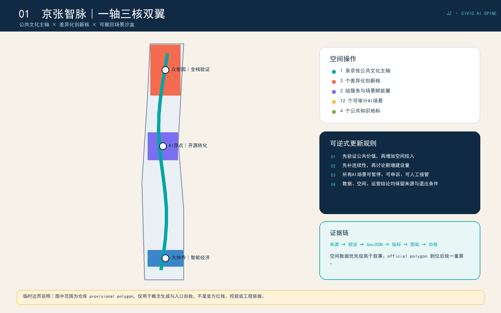
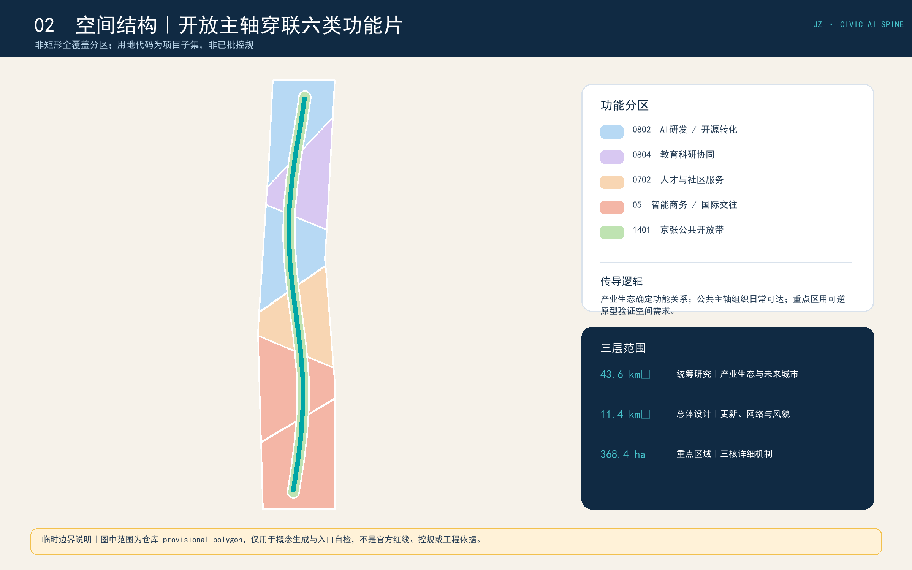
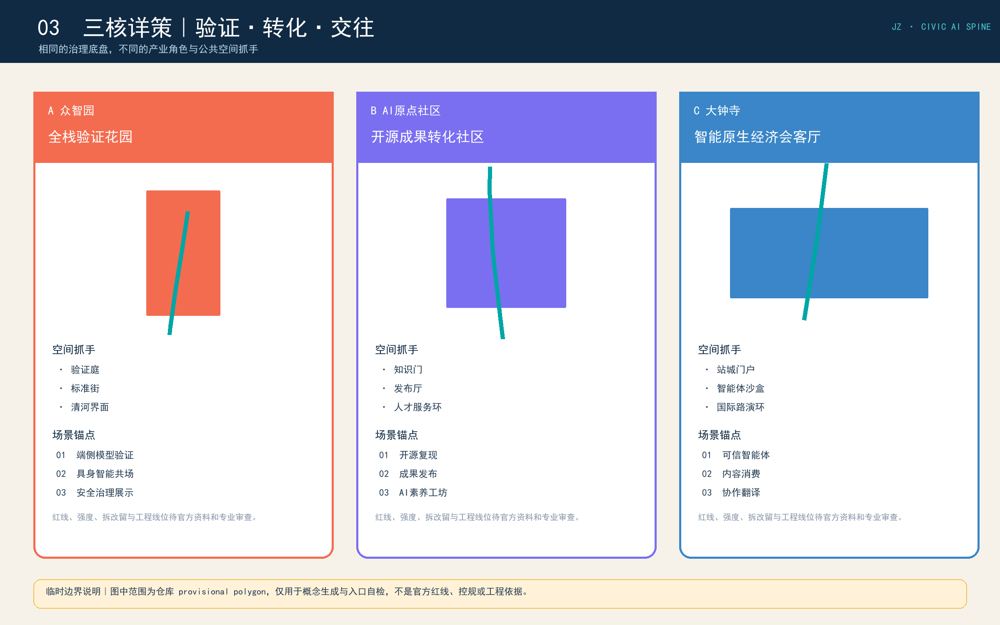
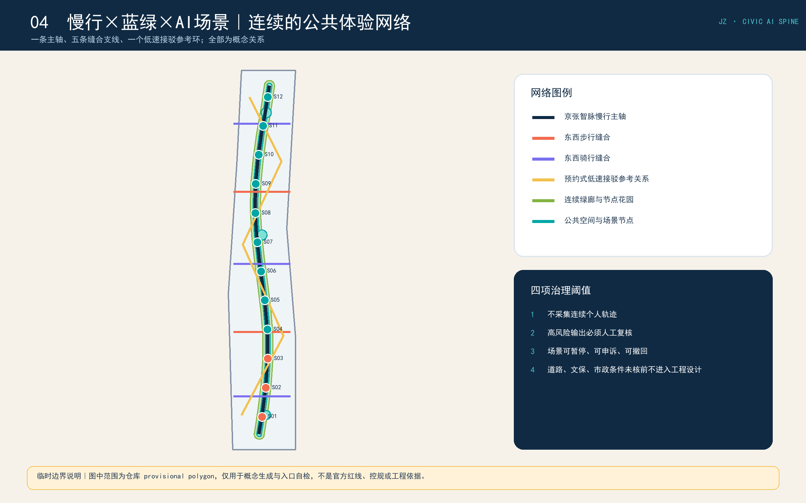
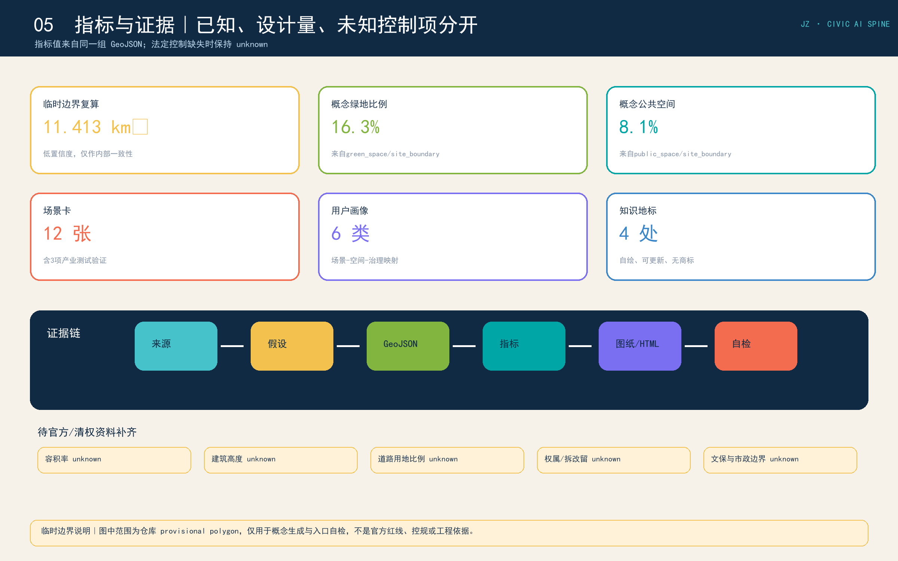

众智园
全栈验证花园：验证庭、标准街、清河界面。
以公共文化主轴组织创新资源，以三处差异化创新核承载验证、转化与交往，以最小数据、人工复核和可撤回机制治理十二个AI场景。

43.6 km² 统筹研究：产业生态与未来城市。
11.4 km² 总体设计：更新、交通、蓝绿与风貌。
368.4 ha 重点区域：三核详细机制。
一条公共文化主轴、三处差异化创新核、两组服务翼、五条东西缝合支线、一个低速接驳参考环。

buildings.geojson 为 12 个概念原型包络，不是现状建筑或拆改留结论。

全栈验证花园：验证庭、标准街、清河界面。
开源成果转化社区：知识门、发布厅、人才服务环。
智能原生经济会客厅：站城门户、智能体沙盒、国际路演环。


覆盖公告1.3、1.4、1.5与agent.1-agent.6；5项mandatory专业标准已映射；15项正式设计深度均链接正文、图层、指标、图纸、来源、假设与自检。
容积率、建筑高度、道路面积、权属拆改留、文保与市政边界保持 unknown。